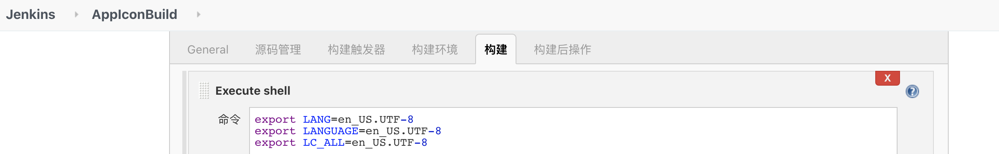

<!DOCTYPE html><html lang="zh-CN" data-default-color-scheme="auto"><head><meta charset="UTF-8"><link rel="apple-touch-icon" sizes="76x76" href="/img/apple-touch-icon.png"><link rel="icon" href="/img/favicon.png"><meta name="viewport" content="width=device-width,initial-scale=1,maximum-scale=5,shrink-to-fit=no"><meta http-equiv="x-ua-compatible" content="ie=edge"><meta http-equiv="Content-Security-Policy" content="upgrade-insecure-requests"><meta name="theme-color" content="#2f4154"><meta name="author" content="Navimark"><meta name="keywords" content="Xcode,Python,开发技巧,AppIcon,工程配置,工程管理,工程解析"><meta name="description" content="需求由来日常开发迭代中，为了能让需求能够被及时验收、让问题 &#x2F; bug 能得到及时验证，我们编写的代码需要持续地交付，为此我们搭建了 Jenkins 自动工具来交付版本。 有些时候我们会对同一个 App 并行开发不同的版本，随着不同功能的不同版本的同一 App 的交付（内部测试），产品同学和测试同学可能会搞不清楚自己手机上安装的到底是哪个版本、对应着哪个需求或问题要被验证，他们当然可以进入 App"><meta property="og:type" content="article"><meta property="og:title" content="给 Xcode 工程的 AppIcon 添加版本信息"><meta property="og:url" content="https://navimark.github.io/posts/4b4dbb8b.html"><meta property="og:site_name" content="子非鱼"><meta property="og:description" content="需求由来日常开发迭代中，为了能让需求能够被及时验收、让问题 &#x2F; bug 能得到及时验证，我们编写的代码需要持续地交付，为此我们搭建了 Jenkins 自动工具来交付版本。 有些时候我们会对同一个 App 并行开发不同的版本，随着不同功能的不同版本的同一 App 的交付（内部测试），产品同学和测试同学可能会搞不清楚自己手机上安装的到底是哪个版本、对应着哪个需求或问题要被验证，他们当然可以进入 App"><meta property="og:locale" content="zh_CN"><meta property="og:image" content="https://navimark.github.io/img/PostIndexImg/Older/add-logo-for-ios-project.png"><meta property="article:published_time" content="2020-08-13T10:52:57.000Z"><meta property="article:modified_time" content="2022-02-23T11:00:40.421Z"><meta property="article:author" content="Navimark"><meta property="article:tag" content="工具"><meta property="article:tag" content="iOS"><meta property="article:tag" content="Python"><meta property="article:tag" content="脚本"><meta property="article:tag" content="Xcode"><meta name="twitter:card" content="summary_large_image"><meta name="twitter:image" content="https://navimark.github.io/img/PostIndexImg/Older/add-logo-for-ios-project.png"><title>给 Xcode 工程的 AppIcon 添加版本信息 - 子非鱼</title><link rel="stylesheet" href="https://cdn.jsdelivr.net/npm/bootstrap@4.5.3/dist/css/bootstrap.min.css"><link rel="stylesheet" href="https://cdn.jsdelivr.net/npm/github-markdown-css@4.0.0/github-markdown.min.css"><link rel="stylesheet" href="/lib/hint/hint.min.css"><link rel="stylesheet" href="https://cdn.jsdelivr.net/npm/highlight.js@10.4.0/styles/xcode.min.css"><link rel="stylesheet" href="https://cdn.jsdelivr.net/npm/@fancyapps/fancybox@3.5.7/dist/jquery.fancybox.min.css"><link rel="stylesheet" href="//at.alicdn.com/t/font_1749284_ba1fz6golrf.css"><link rel="stylesheet" href="//at.alicdn.com/t/font_1736178_kmeydafke9r.css"><link rel="stylesheet" href="/css/main.css"><script id="fluid-configs">var Fluid=window.Fluid||{},CONFIG={hostname:"navimark.github.io",root:"/",version:"1.8.14",typing:{enable:!0,typeSpeed:70,cursorChar:"_",loop:!1},anchorjs:{enable:!0,element:"h1,h2,h3,h4,h5,h6",placement:"right",visible:"hover",icon:""},progressbar:{enable:!0,height_px:3,color:"#29d",options:{showSpinner:!1,trickleSpeed:100}},copy_btn:!0,image_zoom:{enable:!0,img_url_replace:["",""]},toc:{enable:!0,headingSelector:"h1,h2,h3,h4,h5,h6",collapseDepth:6},lazyload:{enable:!0,loading_img:"/img/loading.gif",onlypost:!1,offset_factor:2},web_analytics:{enable:!0,baidu:15186363,google:"UA-154660540-1",gtag:null,tencent:{sid:null,cid:null},woyaola:null,cnzz:1278975811,leancloud:{app_id:null,app_key:null,server_url:null,path:"window.location.pathname",ignore_local:!1}},search_path:"/local-search.xml"}</script><script src="/js/utils.js"></script><script src="/js/color-schema.js"></script><meta name="generator" content="Hexo 6.0.0"></head><body><header style="height:50vh"><nav id="navbar" class="navbar fixed-top navbar-expand-lg navbar-dark scrolling-navbar"><div class="container"><a class="navbar-brand" href="/"><strong>子非鱼</strong> </a><button id="navbar-toggler-btn" class="navbar-toggler" type="button" data-toggle="collapse" data-target="#navbarSupportedContent" aria-controls="navbarSupportedContent" aria-expanded="false" aria-label="Toggle navigation"><div class="animated-icon"><span></span><span></span><span></span></div></button><div class="collapse navbar-collapse" id="navbarSupportedContent"><ul class="navbar-nav ml-auto text-center"><li class="nav-item"><a class="nav-link" href="/"><i class="iconfont icon-home-fill"></i> 首页</a></li><li class="nav-item"><a class="nav-link" href="/archives/"><i class="iconfont icon-archive-fill"></i> 归档</a></li><li class="nav-item"><a class="nav-link" href="/categories/"><i class="iconfont icon-category-fill"></i> 分类</a></li><li class="nav-item"><a class="nav-link" href="/tags/"><i class="iconfont icon-tags-fill"></i> 标签</a></li><li class="nav-item"><a class="nav-link" href="/about/"><i class="iconfont icon-user-fill"></i> 关于</a></li><li class="nav-item" id="search-btn"><a class="nav-link" target="_self" href="javascript:;" data-toggle="modal" data-target="#modalSearch" aria-label="Search">&nbsp;<i class="iconfont icon-search"></i>&nbsp;</a></li><li class="nav-item" id="color-toggle-btn"><a class="nav-link" target="_self" href="javascript:;" aria-label="Color Toggle">&nbsp;<i class="iconfont icon-dark" id="color-toggle-icon"></i>&nbsp;</a></li></ul></div></div></nav><div class="banner" id="banner" parallax="true" style="background:url(/img/default.jpg) no-repeat center center;background-size:cover"><div class="full-bg-img"><div class="mask flex-center" style="background-color:rgba(0,0,0,.3)"><div class="page-header text-center fade-in-up"><span class="h2" id="subtitle" title="给 Xcode 工程的 AppIcon 添加版本信息"></span><div class="mt-3"><span class="post-meta"><i class="iconfont icon-date-fill" aria-hidden="true"></i> <time datetime="2020-08-13 18:52" pubdate>2020年8月13日 晚上</time></span></div><div class="mt-1"><span class="post-meta mr-2"><i class="iconfont icon-chart"></i> 14k 字 </span><span class="post-meta mr-2"><i class="iconfont icon-clock-fill"></i> 118 分钟</span></div></div></div></div></div></header><main><div class="container-fluid nopadding-x"><div class="row nomargin-x"><div class="d-none d-lg-block col-lg-2"></div><div class="col-lg-8 nopadding-x-md"><div class="container nopadding-x-md" id="board-ctn"><div class="py-5" id="board"><article class="post-content mx-auto"><h1 style="display:none">给 Xcode 工程的 AppIcon 添加版本信息</h1><div class="markdown-body"><h1 id="需求由来"><a href="#需求由来" class="headerlink" title="需求由来"></a>需求由来</h1><p>日常开发迭代中，为了能让需求能够被及时验收、让问题 / bug 能得到及时验证，我们编写的代码需要持续地交付，为此我们搭建了 Jenkins 自动工具来交付版本。</p><p>有些时候我们会对同一个 App 并行开发不同的版本，随着不同功能的不同版本的同一 App 的交付（内部测试），产品同学和测试同学可能会搞不清楚自己手机上安装的到底是哪个版本、对应着哪个需求或问题要被验证，他们当然可以进入 App 的“关于 App”的页面查看版本信息，但是平添了操作步骤和相对应的时间成本，而且对于某些闪退问题的反馈，我们开发并不希望多启动一次 App 来破坏可能的沙盒/日志现场。</p><p>为了了却这一烦恼，我们打算结合当前在用的 Jenkins 将 <strong>App 的版本、代码节点位置、代码分支名</strong>直接展示在 AppIcon 上，以便不需要要打开 App 时也能知道这些信息。</p><h1 id="方案调研"><a href="#方案调研" class="headerlink" title="方案调研"></a>方案调研</h1><ol><li><p>介入时机</p><p>交付给产品同学和测试同学的测试包是通过部署在垃圾桶<sup id="fnref:1" class="footnote-ref"><a href="#fn:1" rel="footnote"><span class="hint--top hint--rounded" aria-label="Mac Pro
">[1]</span></a></sup>上的 Jenkins 构建出来并分发的，我们配置了版本号自增，每次编译都会生成不同的 build 号，所以基于 AppIcon 的修改需要在每次构建时动态生成的，所以在 Jenkins 构建时给 AppIcon 加上这些信息是最合适的，可以放到“构建”步骤中：<br></p></li><li><p>展示的信息</p><p>需要的基本信息：App 版本、构建的分支名和 commit-hash，App 版本可以在 Info.plist 或 <code>project.pbxproj</code> 中获取，构建分支信息可以通过 git 命令获取，问题不大🤔</p></li><li><p>技术点</p><p>预期流程是将上述基础参数动态添加到 AppIcon 上的，涉及到一些图片处理步骤，这方面待选的方案有 <a target="_blank" rel="noopener" href="https://github.com/ImageMagick/ImageMagick"><code>ImageMagick</code></a>，其他方面看起来没有技术难点</p></li><li><p>开发语言</p><p><code>Shell</code> 与系统结合紧密，与操作系统交互时有天然的优势，个人认为 <code>Shell</code> 编写的程序在篇幅短小时无可匹敌，但当篇幅过大时，阅读性和 debug-able 的能力急剧下降，对，其实就是我不会复杂的 <code>Shell</code> 🤦‍♂️。本次选择 <code>Python</code>，它比 Shell 更容易上手，我们可以更多地专注于业务层逻辑，如果需要轮子， <code>Python</code> 中应有尽有。对于图片处理，有知名库：<a target="_blank" rel="noopener" href="https://github.com/python-pillow/Pillow"><code>Pillow</code></a>，似乎也可以不用 <code>ImageMagick</code></p></li></ol><h1 id="代码开发"><a href="#代码开发" class="headerlink" title="代码开发"></a>代码开发</h1><ol><li><p>定义外部接口</p><p>虽然我们项目是通过 Jenkins 打包，但是这个功能不应该被划分为 Jenkins 流水线的一部分，应该是工程的一部分，跟随工程的迭代而完善。它的输入为外部传入的工程文件（<code>.pbxproj</code>）和目标 <code>Target</code> 名，输出即为加上了版本信息的 AppIcon 图片。最终通过命令行传参作为入口：</p><figure class="highlight python"><table><tr><td class="gutter"><div class="code-wrapper"><pre><span class="line">1</span><br><span class="line">2</span><br><span class="line">3</span><br><span class="line">4</span><br><span class="line">5</span><br><span class="line">6</span><br><span class="line">7</span><br></pre></div></td><td class="code"><pre><code class="hljs python"><span class="hljs-keyword">if</span> __name__ == <span class="hljs-string">&#x27;__main__&#x27;</span>:<br><br>    pathes = sys.argv[<span class="hljs-number">1</span>:] <span class="hljs-keyword">if</span> <span class="hljs-built_in">len</span>(sys.argv) &gt; <span class="hljs-number">1</span> <span class="hljs-keyword">else</span> []<br>    <span class="hljs-keyword">if</span> <span class="hljs-built_in">len</span>(pathes) != <span class="hljs-number">2</span>:<br>        <span class="hljs-built_in">print</span>(<span class="hljs-string">&quot;参数个数错误&quot;</span>)<br>    <span class="hljs-keyword">else</span>:<br>        <span class="hljs-keyword">pass</span><br></code></pre></td></tr></table></figure></li><li><p>接收参数</p><p>接收外部传入的 target 名和工程文件路径后，对参数作简单校验：</p><figure class="highlight python"><table><tr><td class="gutter"><pre><span class="line">1</span><br><span class="line">2</span><br><span class="line">3</span><br><span class="line">4</span><br><span class="line">5</span><br></pre></td><td class="code"><pre><code class="hljs python">pbproj_filepath = os.path.abspath(pathes[<span class="hljs-number">0</span>])<br>target_name = pathes[<span class="hljs-number">1</span>]<br><span class="hljs-keyword">if</span> <span class="hljs-keyword">not</span> Path(pbproj_filepath).exists():<br>    <span class="hljs-built_in">print</span>(<span class="hljs-string">&quot;FATAL:&#123;&#125; 不存在&quot;</span>.<span class="hljs-built_in">format</span>(pbproj_filepath))<br>    exit(<span class="hljs-number">1</span>)<br></code></pre></td></tr></table></figure></li><li><p>获取工程配置信息</p><p>版本号、所使用的 AppIcon 的路径信息都存在于 <code>.pbxproj</code> 中，接下来使用 <a target="_blank" rel="noopener" href="https://github.com/kronenthaler/mod-pbxproj"><code>mod-pbxproj</code></a> 解析 <code>.pbxproj</code>。</p><p>新创建一个类:</p><figure class="highlight python"><table><tr><td class="gutter"><pre><span class="line">1</span><br><span class="line">2</span><br><span class="line">3</span><br><span class="line">4</span><br><span class="line">5</span><br><span class="line">6</span><br><span class="line">7</span><br><span class="line">8</span><br><span class="line">9</span><br><span class="line">10</span><br><span class="line">11</span><br><span class="line">12</span><br><span class="line">13</span><br><span class="line">14</span><br><span class="line">15</span><br><span class="line">16</span><br><span class="line">17</span><br><span class="line">18</span><br><span class="line">19</span><br><span class="line">20</span><br><span class="line">21</span><br><span class="line">22</span><br><span class="line">23</span><br><span class="line">24</span><br><span class="line">25</span><br><span class="line">26</span><br><span class="line">27</span><br><span class="line">28</span><br><span class="line">29</span><br><span class="line">30</span><br><span class="line">31</span><br><span class="line">32</span><br><span class="line">33</span><br><span class="line">34</span><br><span class="line">35</span><br><span class="line">36</span><br><span class="line">37</span><br><span class="line">38</span><br><span class="line">39</span><br><span class="line">40</span><br><span class="line">41</span><br><span class="line">42</span><br><span class="line">43</span><br><span class="line">44</span><br><span class="line">45</span><br><span class="line">46</span><br><span class="line">47</span><br><span class="line">48</span><br><span class="line">49</span><br><span class="line">50</span><br><span class="line">51</span><br><span class="line">52</span><br><span class="line">53</span><br><span class="line">54</span><br><span class="line">55</span><br><span class="line">56</span><br><span class="line">57</span><br><span class="line">58</span><br><span class="line">59</span><br><span class="line">60</span><br><span class="line">61</span><br><span class="line">62</span><br><span class="line">63</span><br><span class="line">64</span><br><span class="line">65</span><br><span class="line">66</span><br><span class="line">67</span><br><span class="line">68</span><br><span class="line">69</span><br><span class="line">70</span><br><span class="line">71</span><br><span class="line">72</span><br><span class="line">73</span><br><span class="line">74</span><br><span class="line">75</span><br></pre></td><td class="code"><pre><code class="hljs python"><span class="hljs-keyword">class</span> <span class="hljs-title class_">ProjectInfo</span>():<br>    <span class="hljs-keyword">def</span> <span class="hljs-title function_">__init__</span>(<span class="hljs-params">self, pbproject_path: <span class="hljs-built_in">str</span>, target_name: <span class="hljs-built_in">str</span></span>):<br>        self.pbproject_path = pbproject_path<br>        self.target_name = target_name<br>        self.project = XcodeProject.load(pbproject_path)<br>        self.build_configs = self.project.objects.get_configurations_on_targets(<br>            target_name=target_name)<br>        self.release_build_config = [<br>            b <span class="hljs-keyword">for</span> b <span class="hljs-keyword">in</span> self.build_configs <span class="hljs-keyword">if</span> b.name == <span class="hljs-string">&#x27;Release&#x27;</span>][-<span class="hljs-number">1</span>]<br><br>    <span class="hljs-keyword">def</span> <span class="hljs-title function_">__find_icon_img_folder</span>(<span class="hljs-params">self, icon_img_name: <span class="hljs-built_in">str</span>, target_folder: <span class="hljs-built_in">str</span></span>):<br>        icon_img_path = <span class="hljs-string">&#x27;&#x27;</span><br>        <span class="hljs-keyword">try</span>:<br>            <span class="hljs-keyword">for</span> root, folder_list, _ <span class="hljs-keyword">in</span> os.walk(target_folder):<br>                <span class="hljs-keyword">for</span> file <span class="hljs-keyword">in</span> folder_list:<br>                    <span class="hljs-keyword">if</span> file == icon_img_name:<br>                        icon_img_path = os.path.join(root, file)<br>                        <span class="hljs-keyword">raise</span> Getoutofloop()<br>        <span class="hljs-keyword">except</span> Getoutofloop:<br>            <span class="hljs-keyword">pass</span><br><br>        <span class="hljs-keyword">return</span> icon_img_path<br><br>    <span class="hljs-keyword">def</span> <span class="hljs-title function_">__project_main_path</span>(<span class="hljs-params">self</span>):<br>        <span class="hljs-keyword">return</span> os.path.dirname(os.path.split(self.pbproject_path)[<span class="hljs-number">0</span>])<br><br>    <span class="hljs-keyword">def</span> <span class="hljs-title function_">get_icon_image_folder</span>(<span class="hljs-params">self</span>):<br>        name = self.release_build_config.buildSettings[<span class="hljs-string">&#x27;ASSETCATALOG_COMPILER_APPICON_NAME&#x27;</span>]<br>        <span class="hljs-keyword">if</span> name:<br>            search_folder = self.__project_main_path()<br>            icon_img_name = name+<span class="hljs-string">&#x27;.appiconset&#x27;</span><br>            <span class="hljs-keyword">return</span> self.__find_icon_img_folder(icon_img_name, search_folder)<br>        <span class="hljs-built_in">print</span>(<span class="hljs-string">&#x27;FATAL: AppICON 路径未找到&#x27;</span>)<br>        <span class="hljs-keyword">return</span> <span class="hljs-string">&#x27;&#x27;</span><br><br>    <span class="hljs-keyword">def</span> <span class="hljs-title function_">__get_info_plist_path</span>(<span class="hljs-params">self</span>):<br>        info_plist_path = self.release_build_config.buildSettings[<span class="hljs-string">&#x27;INFOPLIST_FILE&#x27;</span>]<br>        <span class="hljs-keyword">if</span> info_plist_path:<br>            xcode_placeholder_path = <span class="hljs-string">&#x27;$(SRCROOT)&#x27;</span>  <span class="hljs-comment"># 可能在路径中并没有</span><br>            info_plist_path = info_plist_path.replace(<br>                xcode_placeholder_path, <span class="hljs-string">&#x27;&#x27;</span>)<br>            info_plist_path = info_plist_path <span class="hljs-keyword">if</span> info_plist_path[<span class="hljs-number">0</span>] != <span class="hljs-string">&#x27;/&#x27;</span> <span class="hljs-keyword">else</span> info_plist_path[<span class="hljs-number">1</span>:]<br>            info_plist_path = os.path.join(<br>                self.__project_main_path(), info_plist_path)<br>        <span class="hljs-keyword">return</span> info_plist_path<br><br>    <span class="hljs-keyword">def</span> <span class="hljs-title function_">get_version_info</span>(<span class="hljs-params">self</span>):<br>        <span class="hljs-comment"># 先从 project 获取，如果失败(失败定义：不全是 数字 和 &#x27;.&#x27; 组成)，从 plist 获取</span><br>        <span class="hljs-keyword">def</span> <span class="hljs-title function_">valid_version</span>(<span class="hljs-params">main_version: <span class="hljs-built_in">str</span></span>):<br>            <span class="hljs-string">&quot;&quot;&quot;</span><br><span class="hljs-string">            如果由 . 和 数字组成，就是合法的；如果全部由数字组成，也是合法的</span><br><span class="hljs-string">            &quot;&quot;&quot;</span><br>            <span class="hljs-keyword">return</span> (<span class="hljs-string">&#x27;.&#x27;</span> <span class="hljs-keyword">in</span> main_version <span class="hljs-keyword">and</span> main_version.replace(<span class="hljs-string">&#x27;.&#x27;</span>, <span class="hljs-string">&#x27;&#x27;</span>).isdigit()) <span class="hljs-keyword">or</span> main_version.isdigit()<br><br>        main_version = self.release_build_config.buildSettings[<span class="hljs-string">&#x27;CURRENT_PROJECT_VERSION&#x27;</span>]<br>        <span class="hljs-keyword">if</span> main_version <span class="hljs-keyword">and</span> valid_version(main_version):<br>            <span class="hljs-keyword">return</span> main_version<br>        <span class="hljs-keyword">else</span>:<br>            plist_path = self.__get_info_plist_path()<br>            <span class="hljs-built_in">print</span>(<span class="hljs-string">&quot;转向从 plist 读取版本号: &#123;&#125;&quot;</span>.<span class="hljs-built_in">format</span>(plist_path))<br>            plist = <span class="hljs-literal">None</span><br>            <span class="hljs-keyword">with</span> <span class="hljs-built_in">open</span>(plist_path, <span class="hljs-string">&#x27;rb&#x27;</span>) <span class="hljs-keyword">as</span> rbf:<br>                plist = plistlib.load(rbf)<br>            <span class="hljs-keyword">if</span> plist:<br>                <span class="hljs-keyword">return</span> plist[<span class="hljs-string">&#x27;CFBundleShortVersionString&#x27;</span>]<br>        <span class="hljs-keyword">return</span> <span class="hljs-string">&#x27;&#x27;</span><br><br>    <span class="hljs-keyword">def</span> <span class="hljs-title function_">get_git_branch_name</span>(<span class="hljs-params">self</span>):<br>        name = exe_command([<span class="hljs-string">&#x27;git&#x27;</span>, <span class="hljs-string">&#x27;symbolic-ref&#x27;</span>, <span class="hljs-string">&#x27;--short&#x27;</span>, <span class="hljs-string">&#x27;-q&#x27;</span>, <span class="hljs-string">&#x27;HEAD&#x27;</span>]).split(<span class="hljs-string">&#x27;/&#x27;</span>)[-<span class="hljs-number">1</span>]<br>        <span class="hljs-keyword">if</span> <span class="hljs-built_in">len</span>(name) == <span class="hljs-number">0</span> <span class="hljs-keyword">or</span> <span class="hljs-built_in">len</span>(name.replace(<span class="hljs-string">&#x27; &#x27;</span>,<span class="hljs-string">&#x27;&#x27;</span>)) == <span class="hljs-number">0</span>:<br>            <span class="hljs-keyword">return</span> os.environ.get(<span class="hljs-string">&#x27;GIT_BRANCH&#x27;</span>,<span class="hljs-string">&#x27;&#x27;</span>).split(<span class="hljs-string">&#x27;/&#x27;</span>)[-<span class="hljs-number">1</span>]<br>        <span class="hljs-keyword">return</span> name<br><br>    <span class="hljs-keyword">def</span> <span class="hljs-title function_">get_git_last_cmt_id</span>(<span class="hljs-params">self</span>):<br>        <span class="hljs-keyword">return</span> exe_command([<span class="hljs-string">&#x27;git&#x27;</span>, <span class="hljs-string">&#x27;rev-parse&#x27;</span>, <span class="hljs-string">&#x27;--short&#x27;</span>, <span class="hljs-string">&#x27;HEAD&#x27;</span>])<br></code></pre></td></tr></table></figure><p>在<code>ProjectInfo</code> 中预期能够拿到版本号、AppIcon 所在路径、branch 名、commit-hash。</p><ul><li><p>版本号</p><p>使用 <code>mod-pbxproj</code> 初始化工程，然后拿到 <code>CURRENT_PROJECT_VERSION</code> 对应的版本号。这里有一个坑点，Xcode 从 v10 升级到 v11 后，默认从<code>$(MARKETING_VERSION)</code>和<code>$(CURRENT_PROJECT_VERSION)</code>获取主版本号，从旧版本格式的 <code>.pbxproj</code> 升级到 Xcode v11 后，Info.plist 中的<code>Bundle version</code> 甚至有可能为 <code>$(MARKETING_VERSION).xxx</code> ，所以这里做了一个兼容处理。事实上，如果是 Xcode v11 创建的工程版本号就比较清爽，当然对于我们这种旧版本 Xcode 创建的工程，也可以选择手动处理一次，将版本号改成新版本的样式。</p></li><li><p>AppIcon 路径</p><p>拿到工程所使用的的 AppIcon 文件夹名字后，再遍历找到 AppIcon 文件夹的绝对路径，遍历时涉及到跳出双重循环的问题，这里找到了个人觉得比较 trick 的方式，即通过抛出一个已知的异常 <code>Getoutofloop</code> 来结束双重信息：</p><figure class="highlight python"><table><tr><td class="gutter"><pre><span class="line">1</span><br><span class="line">2</span><br></pre></td><td class="code"><pre><code class="hljs python"><span class="hljs-keyword">class</span> <span class="hljs-title class_">Getoutofloop</span>(<span class="hljs-title class_ inherited__">Exception</span>):<br>    <span class="hljs-keyword">pass</span><br></code></pre></td></tr></table></figure><p>而之所以需要遍历，是因为我从 <code>.pbxproj</code> 中找不到可以直接“取”出来用的路径，只能使用这种不严谨的方式，如果有更优雅的方式，请不吝指教。</p></li><li><p>branch 名和最后一次 commit-hash</p><p>这种获取 <code>git</code> 相关信息的，使用命令行应该是最快捷的，所以封装了一个简单的执行 Shell 命令的函数 <code>exe_command</code>:</p><figure class="highlight python"><table><tr><td class="gutter"><pre><span class="line">1</span><br><span class="line">2</span><br><span class="line">3</span><br></pre></td><td class="code"><pre><code class="hljs python"><span class="hljs-keyword">def</span> <span class="hljs-title function_">exe_command</span>(<span class="hljs-params"><span class="hljs-built_in">list</span></span>):<br>    result = subprocess.run(<span class="hljs-built_in">list</span>, stdout=subprocess.PIPE)<br>    <span class="hljs-keyword">return</span> result.stdout.decode(<span class="hljs-string">&quot;utf-8&quot;</span>).strip(<span class="hljs-string">&#x27;\n&#x27;</span>)<br></code></pre></td></tr></table></figure><p>获取分支名遇到的一个坑点：向 Jenkins 指定分支名后，被 pull 到本地的代码似乎是指向一个临时分支，通过 Git 命名并没能获取到分支名，所以这里通过获取 Jenkins 的环境变量 <code>GIT_BRANCH</code> 来获取分支名</p></li></ul></li><li><p>给图片加上自定义文字信息，封装在 <code>AddVersionInfo</code> 中：</p><figure class="highlight python"><table><tr><td class="gutter"><pre><span class="line">1</span><br><span class="line">2</span><br><span class="line">3</span><br><span class="line">4</span><br><span class="line">5</span><br><span class="line">6</span><br><span class="line">7</span><br><span class="line">8</span><br><span class="line">9</span><br><span class="line">10</span><br><span class="line">11</span><br><span class="line">12</span><br><span class="line">13</span><br><span class="line">14</span><br><span class="line">15</span><br><span class="line">16</span><br><span class="line">17</span><br><span class="line">18</span><br><span class="line">19</span><br><span class="line">20</span><br><span class="line">21</span><br><span class="line">22</span><br><span class="line">23</span><br><span class="line">24</span><br><span class="line">25</span><br><span class="line">26</span><br><span class="line">27</span><br><span class="line">28</span><br><span class="line">29</span><br><span class="line">30</span><br><span class="line">31</span><br><span class="line">32</span><br><span class="line">33</span><br><span class="line">34</span><br><span class="line">35</span><br><span class="line">36</span><br><span class="line">37</span><br><span class="line">38</span><br><span class="line">39</span><br><span class="line">40</span><br><span class="line">41</span><br><span class="line">42</span><br><span class="line">43</span><br><span class="line">44</span><br><span class="line">45</span><br><span class="line">46</span><br><span class="line">47</span><br><span class="line">48</span><br><span class="line">49</span><br><span class="line">50</span><br><span class="line">51</span><br><span class="line">52</span><br><span class="line">53</span><br><span class="line">54</span><br><span class="line">55</span><br></pre></td><td class="code"><pre><code class="hljs python"><span class="hljs-keyword">class</span> <span class="hljs-title class_">AddVersionInfo</span>():<br><br>    <span class="hljs-keyword">def</span> <span class="hljs-title function_">__init__</span>(<span class="hljs-params">self, img_folder: <span class="hljs-built_in">str</span>, version: <span class="hljs-built_in">str</span>, branch_name: <span class="hljs-built_in">str</span>, commit_id: <span class="hljs-built_in">str</span></span>):<br>        self.img_folder = img_folder<br>        self.version = version<br>        self.branch_name = branch_name<br>        self.commit_id = commit_id<br><br><span class="hljs-meta">    @classmethod</span><br>    <span class="hljs-keyword">def</span> <span class="hljs-title function_">__add_img_blur</span>(<span class="hljs-params">cls, img, blur_rect: <span class="hljs-built_in">tuple</span></span>):<br>        img = img.convert(<span class="hljs-string">&quot;RGB&quot;</span>)<br>        img.load()<br>        mask = Image.new(<span class="hljs-string">&#x27;L&#x27;</span>, img.size, <span class="hljs-number">0</span>)<br>        draw = ImageDraw.Draw(mask)<br>        <span class="hljs-comment"># 左上角点，右下角点</span><br>        draw.rectangle([blur_rect[:<span class="hljs-number">2</span>], img.size], fill=<span class="hljs-number">255</span>)<br>        height = img.size[<span class="hljs-number">0</span>]<br>        blurred = img.<span class="hljs-built_in">filter</span>(ImageFilter.GaussianBlur(height * <span class="hljs-number">0.06</span>))<br>        img.paste(blurred, mask=mask)<br>        <span class="hljs-keyword">return</span> img<br><br><span class="hljs-meta">    @classmethod</span><br>    <span class="hljs-keyword">def</span> <span class="hljs-title function_">__add_img_txt</span>(<span class="hljs-params">cls, img, draw, txt: <span class="hljs-built_in">str</span>, top_margins: <span class="hljs-type">List</span>[<span class="hljs-built_in">int</span>]</span>):<br>        top_margin = top_margins[<span class="hljs-number">0</span>]<br>        myFont = ImageFont.truetype(<span class="hljs-string">&quot;SFNSMono.ttf&quot;</span>, <span class="hljs-built_in">int</span>(<span class="hljs-number">0.14</span> * img.size[<span class="hljs-number">0</span>]))<br>        txt_size = draw.textsize(txt, font=myFont)<br>        versionTxtO = ((img.size[<span class="hljs-number">0</span>] - txt_size[<span class="hljs-number">0</span>]) / <span class="hljs-number">2</span>, top_margin)<br>        draw.text(versionTxtO, txt, fill=<span class="hljs-string">&quot;black&quot;</span>, font=myFont)<br>        top_margins[<span class="hljs-number">0</span>] = top_margin + txt_size[<span class="hljs-number">1</span>]<br>        <span class="hljs-keyword">return</span> img<br><br>    <span class="hljs-keyword">def</span> <span class="hljs-title function_">add_single_img</span>(<span class="hljs-params">self, img_path: <span class="hljs-built_in">str</span></span>):<br>        img = Image.<span class="hljs-built_in">open</span>(img_path)<br>        blur_rect = (<span class="hljs-number">0</span>, <span class="hljs-built_in">int</span>(img.size[<span class="hljs-number">1</span>]*<span class="hljs-number">0.5</span>),<br>                    <span class="hljs-built_in">int</span>(img.size[<span class="hljs-number">0</span>]), <span class="hljs-built_in">int</span>(img.size[<span class="hljs-number">1</span>]*<span class="hljs-number">0.5</span>))<br>        img = AddVersionInfo.__add_img_blur(img, blur_rect)<br><br>        draw = ImageDraw.Draw(img)<br>        last_top_margin = img.size[<span class="hljs-number">1</span>]*<span class="hljs-number">0.5</span> + <span class="hljs-number">2</span><br>        <span class="hljs-keyword">for</span> txt <span class="hljs-keyword">in</span> [self.version, self.branch_name, self.commit_id]:<br>            margin_wrapper = [last_top_margin]<br>            img = AddVersionInfo.__add_img_txt(<br>                img, draw, txt, top_margins=margin_wrapper)<br>            last_top_margin = margin_wrapper[<span class="hljs-number">0</span>]<br>        img.save(img_path)<br><br>    <span class="hljs-keyword">def</span> <span class="hljs-title function_">add_version_info</span>(<span class="hljs-params">self</span>):<br>        <span class="hljs-built_in">print</span>(<span class="hljs-string">&quot;版本号:&#123;&#125;&quot;</span>.<span class="hljs-built_in">format</span>(self.version))<br>        <span class="hljs-built_in">print</span>(<span class="hljs-string">&quot;分支:&#123;&#125;&quot;</span>.<span class="hljs-built_in">format</span>(self.branch_name))<br>        <span class="hljs-built_in">print</span>(<span class="hljs-string">&quot;上次提交:&#123;&#125;&quot;</span>.<span class="hljs-built_in">format</span>(self.commit_id))<br>        <span class="hljs-keyword">for</span> root, _, file_list <span class="hljs-keyword">in</span> os.walk(self.img_folder):<br>            <span class="hljs-keyword">for</span> file <span class="hljs-keyword">in</span> file_list:<br>                full_path = os.path.join(root, file)<br>                <span class="hljs-keyword">if</span> os.path.isfile(full_path) <span class="hljs-keyword">and</span> imghdr.what(full_path) <span class="hljs-keyword">in</span> [<span class="hljs-string">&#x27;png&#x27;</span>]:<br>                    self.add_single_img(full_path)<br></code></pre></td></tr></table></figure><p>预期是给 <code>.appiconset</code> 中所有图片加上指定文字信息。先在图片的下半部分添加模糊效果，避免文字看不清，接着在模糊部分从上至下绘制文本，保存。由于图片大小不一，所以选择了纤细、清晰的系统字体，并且根据图片大小决定模糊程度和文字字号。</p></li><li><p>运行与部署</p><ul><li><p>加上依赖:</p><figure class="highlight python"><table><tr><td class="gutter"><pre><span class="line">1</span><br><span class="line">2</span><br><span class="line">3</span><br><span class="line">4</span><br><span class="line">5</span><br><span class="line">6</span><br><span class="line">7</span><br><span class="line">8</span><br><span class="line">9</span><br><span class="line">10</span><br><span class="line">11</span><br></pre></td><td class="code"><pre><code class="hljs python"><span class="hljs-keyword">from</span> PIL <span class="hljs-keyword">import</span> Image, ImageFilter, ImageDraw, ImageFont<br><span class="hljs-keyword">import</span> sys<br><span class="hljs-keyword">import</span> imghdr<br><span class="hljs-keyword">from</span> pathlib <span class="hljs-keyword">import</span> Path<br><span class="hljs-keyword">import</span> typing<br><span class="hljs-keyword">import</span> plistlib<br><span class="hljs-keyword">from</span> typing <span class="hljs-keyword">import</span> <span class="hljs-type">List</span><br><span class="hljs-keyword">import</span> subprocess<br><span class="hljs-keyword">from</span> pbxproj <span class="hljs-keyword">import</span> PBXNativeTarget<br><span class="hljs-keyword">from</span> pbxproj <span class="hljs-keyword">import</span> XcodeProject<br><span class="hljs-keyword">import</span> os<br></code></pre></td></tr></table></figure></li><li><p>完善入口：</p><figure class="highlight python"><table><tr><td class="gutter"><pre><span class="line">1</span><br><span class="line">2</span><br><span class="line">3</span><br><span class="line">4</span><br><span class="line">5</span><br><span class="line">6</span><br><span class="line">7</span><br><span class="line">8</span><br><span class="line">9</span><br><span class="line">10</span><br><span class="line">11</span><br><span class="line">12</span><br><span class="line">13</span><br><span class="line">14</span><br><span class="line">15</span><br><span class="line">16</span><br><span class="line">17</span><br></pre></td><td class="code"><pre><code class="hljs python"><span class="hljs-keyword">if</span> __name__ == <span class="hljs-string">&#x27;__main__&#x27;</span>:<br><br>pathes = sys.argv[<span class="hljs-number">1</span>:] <span class="hljs-keyword">if</span> <span class="hljs-built_in">len</span>(sys.argv) &gt; <span class="hljs-number">1</span> <span class="hljs-keyword">else</span> []<br><span class="hljs-keyword">if</span> <span class="hljs-built_in">len</span>(pathes) != <span class="hljs-number">2</span>:<br>    <span class="hljs-built_in">print</span>(<span class="hljs-string">&quot;参数个数错误&quot;</span>)<br><span class="hljs-keyword">else</span>:<br>    pbproj_filepath = os.path.abspath(pathes[<span class="hljs-number">0</span>])<br>    target_name = pathes[<span class="hljs-number">1</span>]<br>    <span class="hljs-keyword">if</span> <span class="hljs-keyword">not</span> Path(pbproj_filepath).exists():<br>        <span class="hljs-built_in">print</span>(<span class="hljs-string">&quot;FATAL:&#123;&#125; 不存在&quot;</span>.<span class="hljs-built_in">format</span>(pbproj_filepath))<br>        exit(<span class="hljs-number">1</span>)<br>    pf = ProjectInfo(pbproj_filepath, target_name)<br>    avi = AddVersionInfo(pf.get_icon_image_folder(),<br>                        pf.get_version_info(),<br>                        pf.get_git_branch_name(),<br>                        pf.get_git_last_cmt_id())<br>    avi.add_version_info()<br></code></pre></td></tr></table></figure></li><li><p>部署<br>在 Jenkins 的 <code>Execute shell</code> 中加上调用语句:</p><figure class="highlight python"><table><tr><td class="gutter"><pre><span class="line">1</span><br></pre></td><td class="code"><pre><code class="hljs python">python3 ./ScriptsProvisoningfiles/add_logo.py ./MachOExploration.xcodeproj/project.pbxproj MachOExploration<br></code></pre></td></tr></table></figure><p>然后再执行构建动作。</p></li></ul></li></ol><h1 id="后续"><a href="#后续" class="headerlink" title="后续"></a>后续</h1><p>运行 Jenkins 的垃圾桶的算力充足，所以并没有考虑缓存，就每次构建内测包时都版本化处理 AppIcon。如果构建给 Apple，就去掉对 <code>add_logo.py</code> 的调用。也可以作为 Build Phrase 添加到 Xcode 中，实现 Xcode build 时自动执行，但是这时候就要考虑 AppIcon 的复用和缓存问题了。</p><p>目前脚本还不够智能，依赖的一大堆库只能手动安装，后续可以优化为自动检查和安装。</p><details><summary>完整脚本</summary><figure class="highlight python"><table><tr><td class="gutter"><pre><span class="line">1</span><br><span class="line">2</span><br><span class="line">3</span><br><span class="line">4</span><br><span class="line">5</span><br><span class="line">6</span><br><span class="line">7</span><br><span class="line">8</span><br><span class="line">9</span><br><span class="line">10</span><br><span class="line">11</span><br><span class="line">12</span><br><span class="line">13</span><br><span class="line">14</span><br><span class="line">15</span><br><span class="line">16</span><br><span class="line">17</span><br><span class="line">18</span><br><span class="line">19</span><br><span class="line">20</span><br><span class="line">21</span><br><span class="line">22</span><br><span class="line">23</span><br><span class="line">24</span><br><span class="line">25</span><br><span class="line">26</span><br><span class="line">27</span><br><span class="line">28</span><br><span class="line">29</span><br><span class="line">30</span><br><span class="line">31</span><br><span class="line">32</span><br><span class="line">33</span><br><span class="line">34</span><br><span class="line">35</span><br><span class="line">36</span><br><span class="line">37</span><br><span class="line">38</span><br><span class="line">39</span><br><span class="line">40</span><br><span class="line">41</span><br><span class="line">42</span><br><span class="line">43</span><br><span class="line">44</span><br><span class="line">45</span><br><span class="line">46</span><br><span class="line">47</span><br><span class="line">48</span><br><span class="line">49</span><br><span class="line">50</span><br><span class="line">51</span><br><span class="line">52</span><br><span class="line">53</span><br><span class="line">54</span><br><span class="line">55</span><br><span class="line">56</span><br><span class="line">57</span><br><span class="line">58</span><br><span class="line">59</span><br><span class="line">60</span><br><span class="line">61</span><br><span class="line">62</span><br><span class="line">63</span><br><span class="line">64</span><br><span class="line">65</span><br><span class="line">66</span><br><span class="line">67</span><br><span class="line">68</span><br><span class="line">69</span><br><span class="line">70</span><br><span class="line">71</span><br><span class="line">72</span><br><span class="line">73</span><br><span class="line">74</span><br><span class="line">75</span><br><span class="line">76</span><br><span class="line">77</span><br><span class="line">78</span><br><span class="line">79</span><br><span class="line">80</span><br><span class="line">81</span><br><span class="line">82</span><br><span class="line">83</span><br><span class="line">84</span><br><span class="line">85</span><br><span class="line">86</span><br><span class="line">87</span><br><span class="line">88</span><br><span class="line">89</span><br><span class="line">90</span><br><span class="line">91</span><br><span class="line">92</span><br><span class="line">93</span><br><span class="line">94</span><br><span class="line">95</span><br><span class="line">96</span><br><span class="line">97</span><br><span class="line">98</span><br><span class="line">99</span><br><span class="line">100</span><br><span class="line">101</span><br><span class="line">102</span><br><span class="line">103</span><br><span class="line">104</span><br><span class="line">105</span><br><span class="line">106</span><br><span class="line">107</span><br><span class="line">108</span><br><span class="line">109</span><br><span class="line">110</span><br><span class="line">111</span><br><span class="line">112</span><br><span class="line">113</span><br><span class="line">114</span><br><span class="line">115</span><br><span class="line">116</span><br><span class="line">117</span><br><span class="line">118</span><br><span class="line">119</span><br><span class="line">120</span><br><span class="line">121</span><br><span class="line">122</span><br><span class="line">123</span><br><span class="line">124</span><br><span class="line">125</span><br><span class="line">126</span><br><span class="line">127</span><br><span class="line">128</span><br><span class="line">129</span><br><span class="line">130</span><br><span class="line">131</span><br><span class="line">132</span><br><span class="line">133</span><br><span class="line">134</span><br><span class="line">135</span><br><span class="line">136</span><br><span class="line">137</span><br><span class="line">138</span><br><span class="line">139</span><br><span class="line">140</span><br><span class="line">141</span><br><span class="line">142</span><br><span class="line">143</span><br><span class="line">144</span><br><span class="line">145</span><br><span class="line">146</span><br><span class="line">147</span><br><span class="line">148</span><br><span class="line">149</span><br><span class="line">150</span><br><span class="line">151</span><br><span class="line">152</span><br><span class="line">153</span><br><span class="line">154</span><br><span class="line">155</span><br><span class="line">156</span><br><span class="line">157</span><br><span class="line">158</span><br><span class="line">159</span><br><span class="line">160</span><br><span class="line">161</span><br><span class="line">162</span><br><span class="line">163</span><br><span class="line">164</span><br><span class="line">165</span><br><span class="line">166</span><br><span class="line">167</span><br><span class="line">168</span><br><span class="line">169</span><br><span class="line">170</span><br><span class="line">171</span><br><span class="line">172</span><br><span class="line">173</span><br><span class="line">174</span><br><span class="line">175</span><br><span class="line">176</span><br><span class="line">177</span><br><span class="line">178</span><br><span class="line">179</span><br></pre></td><td class="code"><pre><code class="hljs python"><span class="hljs-comment"># !/usr/local/bin/python3</span><br><span class="hljs-comment"># -*- coding: utf-8 -*-</span><br><span class="hljs-comment">#</span><br><br>__doc__ = <span class="hljs-string">&quot;&quot;&quot;</span><br><span class="hljs-string"></span><br><span class="hljs-string">&quot;&quot;&quot;</span><br><span class="hljs-comment"># pip3 install Pillow --user</span><br><span class="hljs-keyword">from</span> PIL <span class="hljs-keyword">import</span> Image, ImageFilter, ImageDraw, ImageFont<br><span class="hljs-keyword">import</span> sys<br><span class="hljs-keyword">import</span> imghdr<br><span class="hljs-keyword">from</span> pathlib <span class="hljs-keyword">import</span> Path<br><span class="hljs-keyword">import</span> typing<br><span class="hljs-keyword">import</span> plistlib<br><span class="hljs-keyword">from</span> typing <span class="hljs-keyword">import</span> <span class="hljs-type">List</span><br><span class="hljs-keyword">import</span> subprocess<br><span class="hljs-keyword">from</span> pbxproj <span class="hljs-keyword">import</span> PBXNativeTarget<br><span class="hljs-keyword">from</span> pbxproj <span class="hljs-keyword">import</span> XcodeProject<br><span class="hljs-keyword">import</span> os<br><br><br><span class="hljs-keyword">class</span> <span class="hljs-title class_">AddVersionInfo</span>():<br><br>    <span class="hljs-keyword">def</span> <span class="hljs-title function_">__init__</span>(<span class="hljs-params">self, img_folder: <span class="hljs-built_in">str</span>, version: <span class="hljs-built_in">str</span>, branch_name: <span class="hljs-built_in">str</span>, commit_id: <span class="hljs-built_in">str</span></span>):<br>        self.img_folder = img_folder<br>        self.version = version<br>        self.branch_name = branch_name<br>        self.commit_id = commit_id<br><br><span class="hljs-meta">    @classmethod</span><br>    <span class="hljs-keyword">def</span> <span class="hljs-title function_">__add_img_blur</span>(<span class="hljs-params">cls, img, blur_rect: <span class="hljs-built_in">tuple</span></span>):<br>        img = img.convert(<span class="hljs-string">&quot;RGB&quot;</span>)<br>        img.load()<br>        mask = Image.new(<span class="hljs-string">&#x27;L&#x27;</span>, img.size, <span class="hljs-number">0</span>)<br>        draw = ImageDraw.Draw(mask)<br>        <span class="hljs-comment"># 左上角点，右下角点</span><br>        draw.rectangle([blur_rect[:<span class="hljs-number">2</span>], img.size], fill=<span class="hljs-number">255</span>)<br>        height = img.size[<span class="hljs-number">0</span>]<br>        blurred = img.<span class="hljs-built_in">filter</span>(ImageFilter.GaussianBlur(height * <span class="hljs-number">0.06</span>))<br>        img.paste(blurred, mask=mask)<br>        <span class="hljs-keyword">return</span> img<br><br><span class="hljs-meta">    @classmethod</span><br>    <span class="hljs-keyword">def</span> <span class="hljs-title function_">__add_img_txt</span>(<span class="hljs-params">cls, img, draw, txt: <span class="hljs-built_in">str</span>, top_margins: <span class="hljs-type">List</span>[<span class="hljs-built_in">int</span>]</span>):<br>        top_margin = top_margins[<span class="hljs-number">0</span>]<br>        myFont = ImageFont.truetype(<span class="hljs-string">&quot;SFNSMono.ttf&quot;</span>, <span class="hljs-built_in">int</span>(<span class="hljs-number">0.14</span> * img.size[<span class="hljs-number">0</span>]))<br>        txt_size = draw.textsize(txt, font=myFont)<br>        versionTxtO = ((img.size[<span class="hljs-number">0</span>] - txt_size[<span class="hljs-number">0</span>]) / <span class="hljs-number">2</span>, top_margin)<br>        draw.text(versionTxtO, txt, fill=<span class="hljs-string">&quot;black&quot;</span>, font=myFont)<br>        top_margins[<span class="hljs-number">0</span>] = top_margin + txt_size[<span class="hljs-number">1</span>]<br>        <span class="hljs-keyword">return</span> img<br><br>    <span class="hljs-keyword">def</span> <span class="hljs-title function_">add_single_img</span>(<span class="hljs-params">self, img_path: <span class="hljs-built_in">str</span></span>):<br>        img = Image.<span class="hljs-built_in">open</span>(img_path)<br>        blur_rect = (<span class="hljs-number">0</span>, <span class="hljs-built_in">int</span>(img.size[<span class="hljs-number">1</span>]*<span class="hljs-number">0.5</span>),<br>                     <span class="hljs-built_in">int</span>(img.size[<span class="hljs-number">0</span>]), <span class="hljs-built_in">int</span>(img.size[<span class="hljs-number">1</span>]*<span class="hljs-number">0.5</span>))<br>        img = AddVersionInfo.__add_img_blur(img, blur_rect)<br><br>        draw = ImageDraw.Draw(img)<br>        last_top_margin = img.size[<span class="hljs-number">1</span>]*<span class="hljs-number">0.5</span> + <span class="hljs-number">2</span><br>        <span class="hljs-keyword">for</span> txt <span class="hljs-keyword">in</span> [self.version, self.branch_name, self.commit_id]:<br>            margin_wrapper = [last_top_margin]<br>            img = AddVersionInfo.__add_img_txt(<br>                img, draw, txt, top_margins=margin_wrapper)<br>            last_top_margin = margin_wrapper[<span class="hljs-number">0</span>]<br>        img.save(img_path)<br><br>    <span class="hljs-keyword">def</span> <span class="hljs-title function_">add_version_info</span>(<span class="hljs-params">self</span>):<br>        <span class="hljs-built_in">print</span>(<span class="hljs-string">&quot;版本号:&#123;&#125;&quot;</span>.<span class="hljs-built_in">format</span>(self.version))<br>        <span class="hljs-built_in">print</span>(<span class="hljs-string">&quot;分支:&#123;&#125;&quot;</span>.<span class="hljs-built_in">format</span>(self.branch_name))<br>        <span class="hljs-built_in">print</span>(<span class="hljs-string">&quot;上次提交:&#123;&#125;&quot;</span>.<span class="hljs-built_in">format</span>(self.commit_id))<br>        <span class="hljs-keyword">for</span> root, _, file_list <span class="hljs-keyword">in</span> os.walk(self.img_folder):<br>            <span class="hljs-keyword">for</span> file <span class="hljs-keyword">in</span> file_list:<br>                full_path = os.path.join(root, file)<br>                <span class="hljs-keyword">if</span> os.path.isfile(full_path) <span class="hljs-keyword">and</span> imghdr.what(full_path) <span class="hljs-keyword">in</span> [<span class="hljs-string">&#x27;png&#x27;</span>]:<br>                    self.add_single_img(full_path)<br><br><br><span class="hljs-keyword">def</span> <span class="hljs-title function_">exe_command</span>(<span class="hljs-params"><span class="hljs-built_in">list</span></span>):<br>    result = subprocess.run(<span class="hljs-built_in">list</span>, stdout=subprocess.PIPE)<br>    <span class="hljs-keyword">return</span> result.stdout.decode(<span class="hljs-string">&quot;utf-8&quot;</span>).strip(<span class="hljs-string">&#x27;\n&#x27;</span>)<br><br><br><span class="hljs-keyword">class</span> <span class="hljs-title class_">Getoutofloop</span>(<span class="hljs-title class_ inherited__">Exception</span>):<br>    <span class="hljs-keyword">pass</span><br><br><br><span class="hljs-keyword">class</span> <span class="hljs-title class_">ProjectInfo</span>():<br>    <span class="hljs-keyword">def</span> <span class="hljs-title function_">__init__</span>(<span class="hljs-params">self, pbproject_path: <span class="hljs-built_in">str</span>, target_name: <span class="hljs-built_in">str</span></span>):<br>        self.pbproject_path = pbproject_path<br>        self.target_name = target_name<br>        self.project = XcodeProject.load(pbproject_path)<br>        self.build_configs = self.project.objects.get_configurations_on_targets(<br>            target_name=target_name)<br>        self.release_build_config = [<br>            b <span class="hljs-keyword">for</span> b <span class="hljs-keyword">in</span> self.build_configs <span class="hljs-keyword">if</span> b.name == <span class="hljs-string">&#x27;Release&#x27;</span>][-<span class="hljs-number">1</span>]<br><br>    <span class="hljs-keyword">def</span> <span class="hljs-title function_">__find_icon_img_folder</span>(<span class="hljs-params">self, icon_img_name: <span class="hljs-built_in">str</span>, target_folder: <span class="hljs-built_in">str</span></span>):<br>        icon_img_path = <span class="hljs-string">&#x27;&#x27;</span><br>        <span class="hljs-keyword">try</span>:<br>            <span class="hljs-keyword">for</span> root, folder_list, _ <span class="hljs-keyword">in</span> os.walk(target_folder):<br>                <span class="hljs-keyword">for</span> file <span class="hljs-keyword">in</span> folder_list:<br>                    <span class="hljs-keyword">if</span> file == icon_img_name:<br>                        icon_img_path = os.path.join(root, file)<br>                        <span class="hljs-keyword">raise</span> Getoutofloop()<br>        <span class="hljs-keyword">except</span> Getoutofloop:<br>            <span class="hljs-keyword">pass</span><br><br>        <span class="hljs-keyword">return</span> icon_img_path<br><br>    <span class="hljs-keyword">def</span> <span class="hljs-title function_">__project_main_path</span>(<span class="hljs-params">self</span>):<br>        <span class="hljs-keyword">return</span> os.path.dirname(os.path.split(self.pbproject_path)[<span class="hljs-number">0</span>])<br><br>    <span class="hljs-keyword">def</span> <span class="hljs-title function_">get_icon_image_folder</span>(<span class="hljs-params">self</span>):<br>        name = self.release_build_config.buildSettings[<span class="hljs-string">&#x27;ASSETCATALOG_COMPILER_APPICON_NAME&#x27;</span>]<br>        <span class="hljs-keyword">if</span> name:<br>            search_folder = self.__project_main_path()<br>            icon_img_name = name+<span class="hljs-string">&#x27;.appiconset&#x27;</span><br>            <span class="hljs-keyword">return</span> self.__find_icon_img_folder(icon_img_name, search_folder)<br>        <span class="hljs-built_in">print</span>(<span class="hljs-string">&#x27;FATAL: AppICON 路径未找到&#x27;</span>)<br>        <span class="hljs-keyword">return</span> <span class="hljs-string">&#x27;&#x27;</span><br><br>    <span class="hljs-keyword">def</span> <span class="hljs-title function_">__get_info_plist_path</span>(<span class="hljs-params">self</span>):<br>        info_plist_path = self.release_build_config.buildSettings[<span class="hljs-string">&#x27;INFOPLIST_FILE&#x27;</span>]<br>        <span class="hljs-keyword">if</span> info_plist_path:<br>            xcode_placeholder_path = <span class="hljs-string">&#x27;$(SRCROOT)&#x27;</span>  <span class="hljs-comment"># 可能在路径中并没有</span><br>            info_plist_path = info_plist_path.replace(<br>                xcode_placeholder_path, <span class="hljs-string">&#x27;&#x27;</span>)<br>            info_plist_path = info_plist_path <span class="hljs-keyword">if</span> info_plist_path[<span class="hljs-number">0</span>] != <span class="hljs-string">&#x27;/&#x27;</span> <span class="hljs-keyword">else</span> info_plist_path[<span class="hljs-number">1</span>:]<br>            info_plist_path = os.path.join(<br>                self.__project_main_path(), info_plist_path)<br>        <span class="hljs-keyword">return</span> info_plist_path<br><br>    <span class="hljs-keyword">def</span> <span class="hljs-title function_">get_version_info</span>(<span class="hljs-params">self</span>):<br>        <span class="hljs-comment"># 先从 project 获取，如果失败(失败定义：不全是 数字 和 &#x27;.&#x27; 组成)，从 plist 获取</span><br>        <span class="hljs-keyword">def</span> <span class="hljs-title function_">valid_version</span>(<span class="hljs-params">main_version: <span class="hljs-built_in">str</span></span>):<br>            <span class="hljs-string">&quot;&quot;&quot;</span><br><span class="hljs-string">            如果由 . 和 数字组成，就是合法的；如果全部由数字组成，也是合法的</span><br><span class="hljs-string">            &quot;&quot;&quot;</span><br>            <span class="hljs-keyword">return</span> (<span class="hljs-string">&#x27;.&#x27;</span> <span class="hljs-keyword">in</span> main_version <span class="hljs-keyword">and</span> main_version.replace(<span class="hljs-string">&#x27;.&#x27;</span>, <span class="hljs-string">&#x27;&#x27;</span>).isdigit()) <span class="hljs-keyword">or</span> main_version.isdigit()<br>        <span class="hljs-comment"># 主包的主工程版本号读取</span><br>        main_version = self.release_build_config.buildSettings[<span class="hljs-string">&#x27;MARKETING_VERSION&#x27;</span>]<br>        <span class="hljs-keyword">if</span> main_version <span class="hljs-keyword">and</span> valid_version(main_version):<br>            plist_path = self.__get_info_plist_path()<br>            <span class="hljs-built_in">print</span>(<span class="hljs-string">&quot;转向从 plist 读取版本号: &#123;&#125;&quot;</span>.<span class="hljs-built_in">format</span>(plist_path))<br>            plist = <span class="hljs-literal">None</span><br>            <span class="hljs-keyword">with</span> <span class="hljs-built_in">open</span>(plist_path, <span class="hljs-string">&#x27;rb&#x27;</span>) <span class="hljs-keyword">as</span> rbf:<br>                plist = plistlib.load(rbf)<br>            <span class="hljs-keyword">if</span> plist:<br>                <span class="hljs-keyword">return</span> main_version+<span class="hljs-string">&#x27;.&#x27;</span>+plist[<span class="hljs-string">&#x27;CFBundleVersion&#x27;</span>].split(<span class="hljs-string">&#x27;.&#x27;</span>)[-<span class="hljs-number">1</span>]<br>        <span class="hljs-keyword">return</span> <span class="hljs-string">&#x27;&#x27;</span><br><br>    <span class="hljs-keyword">def</span> <span class="hljs-title function_">get_git_branch_name</span>(<span class="hljs-params">self</span>):<br>        name = exe_command([<span class="hljs-string">&#x27;git&#x27;</span>, <span class="hljs-string">&#x27;symbolic-ref&#x27;</span>, <span class="hljs-string">&#x27;--short&#x27;</span>, <span class="hljs-string">&#x27;-q&#x27;</span>, <span class="hljs-string">&#x27;HEAD&#x27;</span>]).split(<span class="hljs-string">&#x27;/&#x27;</span>)[-<span class="hljs-number">1</span>]<br>        <span class="hljs-keyword">if</span> <span class="hljs-built_in">len</span>(name) == <span class="hljs-number">0</span> <span class="hljs-keyword">or</span> <span class="hljs-built_in">len</span>(name.replace(<span class="hljs-string">&#x27; &#x27;</span>,<span class="hljs-string">&#x27;&#x27;</span>)) == <span class="hljs-number">0</span>:<br>            <span class="hljs-keyword">return</span> os.environ.get(<span class="hljs-string">&#x27;GIT_BRANCH&#x27;</span>,<span class="hljs-string">&#x27;&#x27;</span>).split(<span class="hljs-string">&#x27;/&#x27;</span>)[-<span class="hljs-number">1</span>]<br>        <span class="hljs-keyword">return</span> name<br><br>    <span class="hljs-keyword">def</span> <span class="hljs-title function_">get_git_last_cmt_id</span>(<span class="hljs-params">self</span>):<br>        <span class="hljs-keyword">return</span> exe_command([<span class="hljs-string">&#x27;git&#x27;</span>, <span class="hljs-string">&#x27;rev-parse&#x27;</span>, <span class="hljs-string">&#x27;--short&#x27;</span>, <span class="hljs-string">&#x27;HEAD&#x27;</span>])<br><br><br><span class="hljs-keyword">if</span> __name__ == <span class="hljs-string">&#x27;__main__&#x27;</span>:<br><br>    pathes = sys.argv[<span class="hljs-number">1</span>:] <span class="hljs-keyword">if</span> <span class="hljs-built_in">len</span>(sys.argv) &gt; <span class="hljs-number">1</span> <span class="hljs-keyword">else</span> []<br>    <span class="hljs-keyword">if</span> <span class="hljs-built_in">len</span>(pathes) != <span class="hljs-number">2</span>:<br>        <span class="hljs-built_in">print</span>(<span class="hljs-string">&quot;参数个数错误&quot;</span>)<br>    <span class="hljs-keyword">else</span>:<br>        pbproj_filepath = os.path.abspath(pathes[<span class="hljs-number">0</span>])<br>        target_name = pathes[<span class="hljs-number">1</span>]<br>        <span class="hljs-keyword">if</span> <span class="hljs-keyword">not</span> Path(pbproj_filepath).exists():<br>            <span class="hljs-built_in">print</span>(<span class="hljs-string">&quot;FATAL:&#123;&#125; 不存在&quot;</span>.<span class="hljs-built_in">format</span>(pbproj_filepath))<br>            exit(<span class="hljs-number">1</span>)<br>        pf = ProjectInfo(pbproj_filepath, target_name)<br>        avi = AddVersionInfo(pf.get_icon_image_folder(),<br>                             pf.get_version_info(),<br>                             pf.get_git_branch_name(),<br>                             pf.get_git_last_cmt_id())<br>        avi.add_version_info()<br></code></pre></td></tr></table></figure></details><section class="footnotes"><div class="footnote-list"><ol><li><span id="fn:1" class="footnote-text"><span>Mac Pro <a href="#fnref:1" rev="footnote" class="footnote-backref">↩</a></span></span></li></ol></div></section></div><hr><div><div class="post-metas mb-3"><div class="post-meta mr-3"><i class="iconfont icon-category"></i> <a class="hover-with-bg" href="/categories/%E5%BC%80%E5%8F%91%E6%8A%80%E5%B7%A7/">开发技巧</a></div><div class="post-meta"><i class="iconfont icon-tags"></i> <a class="hover-with-bg" href="/tags/%E5%B7%A5%E5%85%B7/">工具</a> <a class="hover-with-bg" href="/tags/iOS/">iOS</a> <a class="hover-with-bg" href="/tags/Python/">Python</a> <a class="hover-with-bg" href="/tags/%E8%84%9A%E6%9C%AC/">脚本</a> <a class="hover-with-bg" href="/tags/Xcode/">Xcode</a></div></div><p class="note note-warning">本博客所有文章除特别声明外，均采用 <a target="_blank" href="https://creativecommons.org/licenses/by-sa/4.0/deed.zh" rel="nofollow noopener noopener">CC BY-SA 4.0 协议</a> ，转载请注明出处！</p><div class="post-prevnext"><article class="post-prev col-6"><a href="/posts/fc800951.html"><i class="iconfont icon-arrowleft"></i> <span class="hidden-mobile">OC runtime 中的 load 和 initialize</span> <span class="visible-mobile">上一篇</span></a></article><article class="post-next col-6"><a href="/posts/349e475.html"><span class="hidden-mobile">fishhook 原理及其源码阅读</span> <span class="visible-mobile">下一篇</span> <i class="iconfont icon-arrowright"></i></a></article></div></div><article class="comments" id="comments" lazyload><div id="valine"></div><script type="text/javascript">Fluid.utils.loadComments("#valine",(function(){Fluid.utils.createScript("https://cdn.jsdelivr.net/npm/valine@1.4.14/dist/Valine.min.js",(function(){var i=Object.assign({appId:"wphA3YWunUyu9a9gbGyb9kh1-MdYXbMMI",appKey:"Y6tve5P6QYMvu13i6cXcL8ly",path:"window.location.pathname",placeholder:"说点什么",avatar:"retro",meta:["nick","mail","link"],requiredFields:[],pageSize:10,lang:"zh-CN",highlight:!0,recordIP:!1,serverURLs:null,emojiCDN:null,emojiMaps:null,enableQQ:!1,appid:"wphA3YWunUyu9a9gbGyb9kh1-MdYXbMMI",appkey:"Y6tve5P6QYMvu13i6cXcL8ly"},{el:"#valine",path:window.location.pathname});new Valine(i),Fluid.utils.waitElementVisible("#valine .vcontent",()=>{Fluid.plugins.initFancyBox("#valine .vcontent img:not(.vemoji)")})}))}))</script><noscript>Please enable JavaScript to view the comments</noscript></article></article></div></div></div><div class="d-none d-lg-block col-lg-2 toc-container" id="toc-ctn"><div id="toc"><p class="toc-header"><i class="iconfont icon-list"></i>&nbsp;目录</p><div class="toc-body" id="toc-body"></div></div></div></div></div><a id="scroll-top-button" aria-label="TOP" href="#" role="button"><i class="iconfont icon-arrowup" aria-hidden="true"></i></a><div class="modal fade" id="modalSearch" tabindex="-1" role="dialog" aria-labelledby="ModalLabel" aria-hidden="true"><div class="modal-dialog modal-dialog-scrollable modal-lg" role="document"><div class="modal-content"><div class="modal-header text-center"><h4 class="modal-title w-100 font-weight-bold">搜索</h4><button type="button" id="local-search-close" class="close" data-dismiss="modal" aria-label="Close"><span aria-hidden="true">&times;</span></button></div><div class="modal-body mx-3"><div class="md-form mb-5"><input type="text" id="local-search-input" class="form-control validate"> <label data-error="x" data-success="v" for="local-search-input">关键词</label></div><div class="list-group" id="local-search-result"></div></div></div></div></div></main><footer class="text-center mt-5 py-3"><div class="footer-content"><a href="https://hexo.io" target="_blank" rel="nofollow noopener"><span>Hexo</span></a> <i class="iconfont icon-love"></i> <a href="https://github.com/fluid-dev/hexo-theme-fluid" target="_blank" rel="nofollow noopener"><span>Fluid</span></a></div><span id="cnzz_stat_icon_1278975811" style="display:none"></span></footer><script src="https://cdn.jsdelivr.net/npm/nprogress@0.2.0/nprogress.min.js"></script><link rel="stylesheet" href="https://cdn.jsdelivr.net/npm/nprogress@0.2.0/nprogress.min.css"><script>NProgress.configure({showSpinner:!1,trickleSpeed:100}),NProgress.start(),window.addEventListener("load",(function(){NProgress.done()}))</script><script src="https://cdn.jsdelivr.net/npm/jquery@3.5.1/dist/jquery.min.js"></script><script src="https://cdn.jsdelivr.net/npm/bootstrap@4.5.3/dist/js/bootstrap.min.js"></script><script src="/js/events.js"></script><script src="/js/plugins.js"></script><script src="/js/local-search.js"></script><script src="/js/img-lazyload.js"></script><script src="https://cdn.jsdelivr.net/npm/tocbot@4.12.0/dist/tocbot.min.js"></script><script src="https://cdn.jsdelivr.net/npm/@fancyapps/fancybox@3.5.7/dist/jquery.fancybox.min.js"></script><script src="https://cdn.jsdelivr.net/npm/anchor-js@4.3.0/anchor.min.js"></script><script defer src="https://cdn.jsdelivr.net/npm/clipboard@2.0.6/dist/clipboard.min.js"></script><script src="https://cdn.jsdelivr.net/npm/typed.js@2.0.11/lib/typed.min.js"></script><script>!function(t,i){(0,Fluid.plugins.typing)(i.getElementById("subtitle").title)}(window,document)</script><script defer>var _hmt=_hmt||[];!function(){var e=document.createElement("script");e.src="https://hm.baidu.com/hm.js?15186363";var t=document.getElementsByTagName("script")[0];t.parentNode.insertBefore(e,t)}()</script><script defer>window.ga=window.ga||function(){(ga.q=ga.q||[]).push(arguments)},ga.l=+new Date,ga("create","UA-154660540-1","auto"),ga("send","pageview")</script><script async src="https://www.google-analytics.com/analytics.js"></script><script defer src="//s4.cnzz.com/z_stat.php?id=1278975811&show=pic" type="text/javascript"></script><script src="/js/boot.js"></script></body></html>